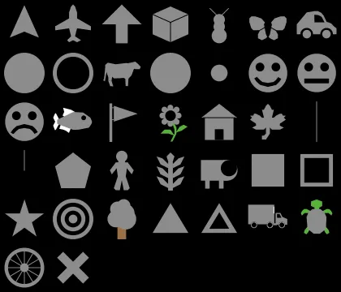
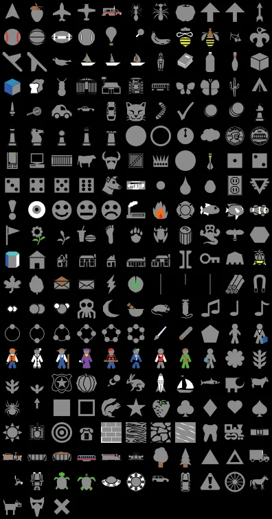
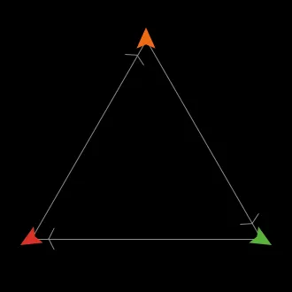
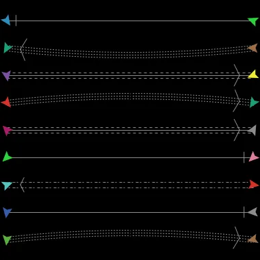

Shapes
The Turtle and Link Shape Editors allows you to create and save turtle and link designs.
NetLogo uses fully scalable and rotatable vector shapes, which means you can create designs by combining basic geometric elements, which can appear on-screen in any size or orientation.
Getting started
To begin making shapes, choose Turtle Shapes Editor or Link Shapes Editor in the Tools menu. A new window will open listing all the shapes currently in the model, beginning with default, the default shape. The Shapes Editor allows you to edit shapes, create new shapes, and borrow from another model. You can also import turtle shapes from a library of pre-existing shapes.
Importing shapes
Every new model in NetLogo starts off containing a small core set of frequently used shapes. Many more turtle shapes are available by using the Import from library… button. This brings up a dialog where you can select one or more shapes and bring them into your model. Select the shapes, then press the Import button.
Similarly, you can use the Import from model… button to borrow shapes from another model.
Default shapes
Here are the turtle shapes that are included by default in every new NetLogo model:

First row: default, airplane, arrow, box, bug, butterfly, car Second row: circle, circle 2, cow, cylinder, dot, face happy, face neutral Third row: face sad, fish, flag, flower, house, leaf, line Fourth row: line half, pentagon, person, plant, sheep, square, square 2 Fifth row: star, target, tree, triangle, triangle 2, truck, turtle Sixth row: wheel, x
Shapes library
And here are the shapes in the shapes library (including all of the default shapes, too):

By default there is only one Link shape in a model, that is “default”. This shape is simply a single straight line with a simple arrowhead (if the link happens to be directed).

Creating and editing turtle shapes
Pressing the New button will make a new shape. Or, you may select an existing shape and press Edit.
Tools
In the upper left corner of the editing window is a group of drawing tools. The arrow is the selection tool, which selects an already drawn element.
To draw a new element, use one of the other seven tools:
- The line tool draws line segments.
- The circle, square, and polygon tools come in two versions, solid and outline.
When using the polygon tool, click the mouse to add a new segment to the polygon. When you’re done adding segments, double click.
After you draw a new element, it is selected, so you can move, delete, or reshape it if you want:
- To move it, drag it with the mouse
- To delete it, press the Delete button.
- To reshape it, drag the small “handles” that appear on the element only when it is selected.
- To change its color, click on the new color.
Previews
As you draw your shape, you will also see it in five smaller sizes in the five preview areas found near the bottom of the editing window. The previews show your shape as it might appear in your model, including how it looks as it rotates. The number below each preview is the size of the preview in pixels. When you edit the view, patch size is also measured in pixels. So for example, the preview with “20” below it shows you how your shape would look on a turtle (of size 1) on patches of size 20 pixels.
The rotatable feature can be turned off if you want a shape that always faces the same way, regardless of the turtle’s heading.
Overlapping shapes
New elements go on top of previous elements. You can change the layering order by selecting an element and then using the Bring to front and Send to back buttons.
Undo
At any point you can use the Undo button to undo the edit you just performed.
Colors
Elements whose color matches the Color that changes (selected from a drop-down menu — the default is gray) will change color according to the value of each turtle’s color variable in your model. Elements of other colors don’t change. For example, you could create cars that always have yellow headlights and black wheels, but different body colors.
Other buttons
The “Rotate Left” and “Rotate Right” buttons rotate elements by 90 degrees. The “Flip Horizontal” and “Flip Vertical” buttons reflect elements across the axes.
These four buttons will rotate or flip the entire shape, unless an element is selected, in which case only that element is affected.
These buttons are especially handy in conjunction with the “Duplicate” button if you want to make shapes that are symmetrical. For example, if you were making a butterfly, you could draw the butterfly’s left wing with the polygon tool, then duplicate the wing with the “Duplicate” button, then turn the copy into a right wing with the “Flip Horizontal” button.
Shape design
It’s tempting to draw complicated, interesting shapes, but remember that in most models, the patch size is so small that you won’t be able to see very much detail. Simple, bold, iconic shapes are usually best.
Keeping a shape
When the shape is done, give it a name and press the Done button at the bottom of the editing window. The shape and its name will now be included in the list of shapes along with the “default” shape.
Creating and editing link shapes
Managing link shapes is very similar to managing turtle shapes. So, you can create a new shape by pressing the New button or you can edit existing shapes. When you are done editing a shape press Done if you want to keep it.
Changing link shape properties
There are several different properties for each link shape that you are allowed to change:
- Name - link shapes can have the same name as turtle shapes but must be unique among link shapes.
- Direction Indicator - the direction indicator (the little arrow on directed links) is just like the turtle vector shapes, you can edit it using the same editor by pressing the Edit button.
- Curviness - this is the amount of bend in a link expressed in patches (this is particularly useful if you have directed links going in both directions so you can discern both links)
- Number of lines: You can have 1, 2, or 3 lines in each link shape, you control this by selecting line patterns in the “left line”, “middle line”, and “right line” selection boxes.
- Dash pattern of lines: There are several dashed line patterns available in the selection boxes so not all lines need be solid.
Here are some link shapes with various properties:

Using shapes in a model
In the model’s code or in the command center, you can use any of the shapes that are in the model (though only turtles can have turtle shapes and only links can have link shapes). For example, suppose you want to create 50 turtles with the shape “rabbit”. Provided there is some turtle shape called rabbit in this model, give this command to the observer in the command center:
observer> crt 50And then give these commands to the turtles to spread them out, then change their shape:
turtles> fd random 15
turtles> set shape "rabbit"Voila! Rabbits! Note the use of double quotes around the shape name. Shape names are strings.
Similarly, you can set the shape variable of links. Assuming there is a link shape called “road” in this model:
observer> crt 5 [ create-links-with other turtles ]
turtles> fd 5
links> set shape "road"The set-default-shape command is also useful for assigning shapes to turtles
and links.